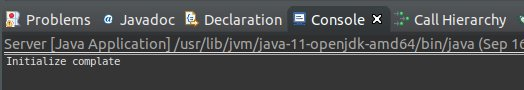
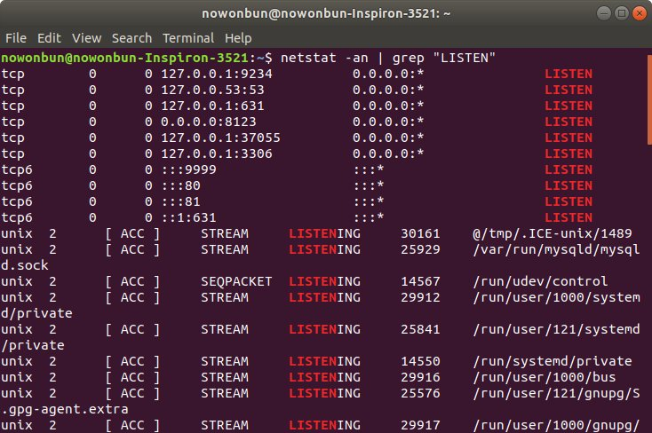
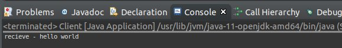
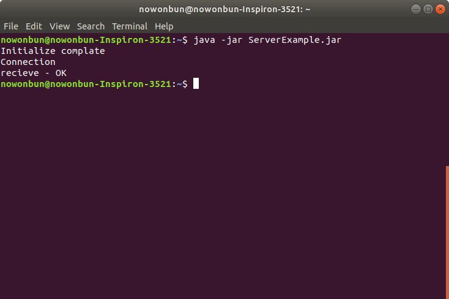

こんにちは。明月です。
このページではソケット(Socket)通信に関して調べてみました。
ソケット(Socket)とは「Java」だけではなく、「C / C++ / C#」などのプログラム言語にも通信に関しては同じ意味になります。
我々が通信する時に転送するデータ(packet)がパソコンからランケーブルによって行きます。そしてランケーブルからルータ、DNS順で移動します。
その移動されたパケットはまたルータによって目標したパソコンに転送され、プログラムから読み込まれて処理して通信がなります。
我々が通信開発するお時、上のパケット移動する形を全て設定するしプログラミングをしません。
この通信形はOS段階で設定され(OSI 7階層)、最終プログラムでソケットを利用して通信を行います。
つまり、「全ての設定されたところで挿し込んで使います。」と意味でソケットの通信といいますね。
link - OSI参照モデル
ソケットの使用方法と流れに関して説明します。
ソケットはサーバがローカルIPをもってPortを開いて(Bind)クライアントの接続を持っています。(Listen)
そしてクライアントはサーバIPアドレスとポート番号で接続(Connection)して連結すれば、サーバとクライアントは「Send」、「Recieve」の形でパケットを送信、受信します。
お互いに通信がおわれば、「close」で接続を切ります。

イメージソース：https://www.ibm.com/support/knowledgecenter/ja/ssw_ibm_i_71/rzab6/howdosockets.htm
これからプログラムで確認します。
import java.io.InputStream;
import java.io.OutputStream;
import java.net.InetSocketAddress;
import java.net.ServerSocket;
import java.net.Socket;
public class Server {
public static void main(String... args) {
// 自動Close
try (ServerSocket server = new ServerSocket()) {
// サーバの初期化(portを9999でソケットを開ける)
InetSocketAddress ipep = new InetSocketAddress(9999);
server.bind(ipep);
System.out.println("Initialize complate");
// Listen開始
Socket client = server.accept();
System.out.println("Connection");
// send, receiver ストリームをもらう。
try ( OutputStream sender = client.getOutputStream();
InputStream receiver = client.getInputStream();) {
// 接続すると「hello world」メッセージを送る。
// データサイズは11bytes
String message = "hello world";
byte[] data = message.getBytes();
// メッセージをbyte[]で送信
sender.write(data, 0, data.length);
// クライアントから受取メッセージのバッファ
// データサイズは2bytes
data = new byte[2];
// メッセージを受け取る。
reciever.read(data, 0, data.length);
message = new String(data);
String out = String.format("recieve - %s", message);
System.out.println(out);
}
} catch (Throwable e) {
e.printStackTrace();
}
}
}

上のソースを起動してListenしている状況を確認します。

上のイメージをみれば「9999」ポートでちゃんとListenしていることを確認できました。
次はクライアントを作成します。
import java.io.InputStream;
import java.io.OutputStream;
import java.net.InetSocketAddress;
import java.net.Socket;
public class Client {
public static void main(String... args) {
// 自動Close
try (Socket client = new Socket()) {
// クライアント初期化 localhost(127.0.0.1)の9999ポートに接続する。
InetSocketAddress ipep = new InetSocketAddress("127.0.0.1", 9999);
// 接続
client.connect(ipep);
// send, receiver ストリームをもらう。
try ( OutputStream sender = client.getOutputStream();
InputStream receiver = client.getInputStream();) {
// サーバからデータを受け取る
// データサイズは11bytes
byte[] data = new byte[11];
receiver.read(data, 0, 11);
String message = new String(data);
String out = String.format("recieve - %s", message);
System.out.println(out);
// サーバにデータを送る。
// データサイズは2byte
message = "OK";
data = message.getBytes();
sender.write(data, 0, data.length);
}
} catch (Throwable e) {
e.printStackTrace();
}
}
}

コンソールでサーバから受け取ったデータで「hello world」というデータがちゃんときました。
また、サーバ側に戻って確認します。

サーバ側には「OK」というデータをちゃんと受け取りましたね。
また、全般的に流れを説明すれば、サーバ側で先に「9999」ポートで「Listen」の状態でクライアントを待ちます。
その後でクライアントはロカールの「9999」ポートで接続します。
その時、サーバがクライアントに「Hello world」と言う「11bytes」サイズのメッセージを送信します。その後、サーバ側はクライアントからメッセージ受信待機になります。
クライアント場合はサーバと接続すればサーバから「Hello world」と言う「11bytes」サイズのメッセージを受け取ります。その後、「OK」と言う「2bytes」のメッセージを送りますね。
また、サーバ側に戻ると「OK」のメッセージを受け取って終了します。同時にクライアントも終了します。
一応、私の場合はパソコン一台でテストをしましたが、2台のパソコンでも同じく動くことを確認できます。
- [Java] Java servletでインスタンスを初期する方法2019/10/17 07:15:48
- [Java] Spring web frameworkで発生する文字化けのEncoding設定2019/10/16 07:32:55
- [Java] Web Spring frameworkでfilter設定2019/10/15 20:12:35
- [Java] Web serviceのweb.xmlでエラーページ設定2019/10/14 20:13:44
- [Java] JPAのDAOをFactoryパターンで管理する方法2019/10/13 22:55:52
- [Java] JPAのSpring frameworkで依存性注入する方法2019/10/13 00:40:08
- [Java] JPAでDAOを生成する方法2019/10/11 07:30:14
- [Java] JPAでトランザクションの使用方法とオブサーバーパターンで共通トランザクション関数を作り方2019/10/10 07:29:43
- [Java] JPAのQuery を作り方2019/10/09 07:34:08
- [Java] JPAのEntityクラス設定(Cascade, fetch)2019/10/08 07:43:33
- [Java] JPAでpersistance.xml設定とentityクラス設定(@GeneratedValue設定)2019/10/07 07:38:13
- [Java] EclipseでJPAフレームワーク設定する方法2019/10/04 19:24:43
- [Java] Web spring frameworkのJSPで使う言語 JSTL - XML2019/10/03 20:02:06
- [Java] Web spring frameworkのJSPで使う言語 JSTL - 関数、データベース2019/10/02 21:00:22
- [Java] Web spring frameworkのJSPで使う言語 JSTL - コアー、フォーマッティング2019/10/01 21:48:08
- [Java] JSPのSpring環境でschedulerのcronを使う方法2020/03/18 00:24:32
- [Java] POIを利用してExcelを扱う方法2020/03/17 01:48:00
- [Java] PDFを出力する方法(itextpdf)2020/03/13 00:47:31
- [Java] ログライブラリ(log4j)を使う方法2020/03/12 00:54:39
- [Java] Jsonタイプのデータを使う方法(Gsonライブラリ)2020/03/11 00:30:15
- [Java] Base64にエンコード、デコードする方法2020/03/09 10:24:01
- [Java] cmdコマンドを実行するための方法2020/03/06 18:01:10
- [Java] メール(javax.mail)を発送する方法2020/03/05 20:07:49
- [Java] クラス複製(Clonable, Reflection)2020/03/05 00:03:19
- [Java] シリアライズ(直列化: Serializable)2020/03/03 00:03:33
- [Java] StringBuilderとStringBufferの差異2020/03/02 07:52:22
- [Java] Compare関数を使う方法2020/02/29 03:00:00
- [Java] 数字フォーマット(お金表示及び小数点以下表示)2020/02/28 03:00:00
- [Java] サーブレット環境で現在の実行ディレクトリを取得する方法2020/02/27 03:00:00
- [Java] 日本語をユニコードに変換して、ユニコードから日本語に変換する方法2020/02/26 03:00:00